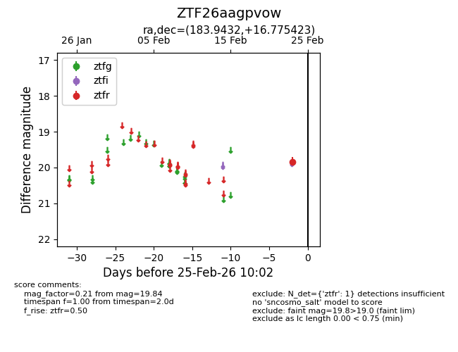
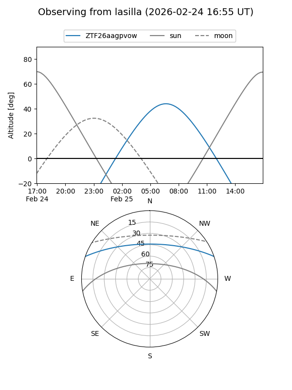
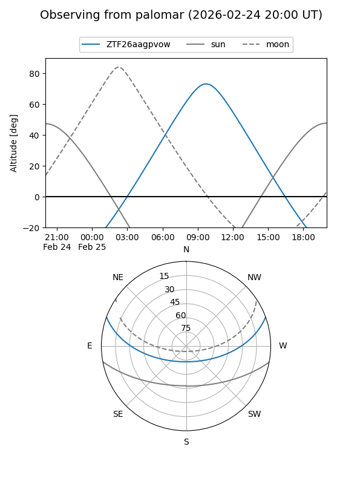

ZTF26aagpvow
Target ZTF26aagpvow at 2026-02-25 10:03
Aliases and brokers:
FINK: link
Lasair: link
ALeRCE: link
alt names
ZTF26aagpvow (ztf,fink_ztf)
Coordinates:
equatorial (ra, dec) = 183.9432,+16.77542
equatorial (HMS+DMS) = 12:15:46.37,+16:46:31.52
galactic (l, b) = (262.5433,+76.76088)
Flags:
Photometry:
last ztfr=19.84
1 ztfr detections
Lightcurve

Visibility


Additional plots